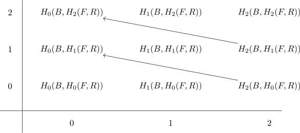
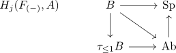

homological serre spectral sequence
Proposition
Let $F \rightarrow E \rightarrow B$ be a fiber sequence where the pi_1 action on the fiber is trivial, $B$ is connected and $A$ is an abelian group. Then there exists a spectral sequence where the second page is given by
which converges.

Proof
ferdi
let $F_{(-)}: B \rightarrow \mathrm{An}$ be the straightening of $E \rightarrow B$. Then $X \simeq \vert X \vert \simeq \mathrm{colim}_{b \in B} \mathcal{F}_b$ using Lurie theorem about colimits in Anima. Furthermore
and we consider the following filtered spectrum
with
- $\mathrm{colim} \simeq \mathbb{S}[X] \otimes A$ (use: $\tau_{\geq *}$ commutes with colimits)
- colimit comumte with colimits ???
- $\mathrm{lim} \simeq 0$ by ... connectivity argument: homtopoy groups vanish for trunctaion reasons
Now
now the functor

if $\pi_1$ acts triviall, then
the functor is constant.
Now using that the functor is constant, we can write
Hence
hence the LHS is given by what we want
markus
Let $F \rightarrow E \rightarrow B$ be a fiber sequence of anima and $A$ an abelian group .